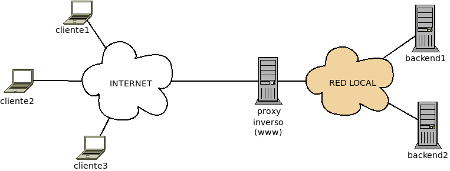
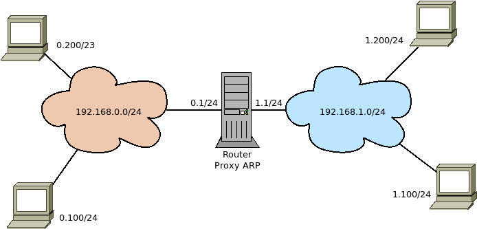

7.5. Proxies¶
Un proxy es una máquina que hace de intermediario en la comunicación entre cliente y servidor. Estas comunicaciones se establecen con protocolos de capa de aplicación y, en consecuencia, los proxies interceptan y gestionan tráfico de aplicación.
7.5.1. Tipos¶
Citaremos dos clasificaciones:
Atendiendo al lado de la comunicación (cliente o servidor) para el que intermedie:
- Proxy directo (generalmente proxy a secas)
Es aquel que captura las peticiones de los clientes concretos de una red hacia todos los servidores (generalmente en internet y de un tipo específico).

- Proxy inverso,
Es aquel que captura las peticiones de todos los potenciales clientes dirigidas a los servidores para los que intermedia. La diferencia, pues, entre éstos y los normales es que mientras los proxies a secas intermedian entre un conjunto limitado de clientes (los de la red local) y cualquier servidor web, los proxies inversos intemedian entre cualquier cliente y el conjunto limitado de servidores web para los que actúa de intermediario.
Advertencia
El proxy inverso no tiene por qué encontrarse en la misma red local del servidor (o los servidores) web como el gráfico da a antender Sí es la situación habitual cuando el proxy es gestionado por la misma organización que el servidor web, pero no lo es en absoluto si se contrata el servicio (p.e. el servicio cloudflare <https://www.cloudflare.com/>).
Atendiendo al efecto de su presencia, los proxies se dividen en proxy explícito, que es aquel que deja notas su presencia, y proxy transparente es aquel cuyo presencia pasa desapercibida. Ahora bien, un proxy puede ser explícito o transparente para el cliente, para el servidor o para ambos. Por lo general:
Cuando se trata de un proxy directo, un proxy se entiende transparente, cuando los clientes no notan su presencia, esto es, cuando creen comunicarse directamente con los servidores a los intentan acceder. De hecho, que un proxy sea explícito implica configurar los propios clientes para obligarlos a pasar por el proxy.
En caso de un proxy inverso, un proxy es transparente cuando el servidor para el que media cree recibir las peticiones directamente de los clientes, esto es, los paquetes entrantes tienen por IP de origen la del cliente y no la del proxy.
7.5.2. Proxies frecuentes¶
- Proxy DNS,
que es aquel proxy directo que se encarga de obtener de un servidor DNS las resoluciones de nombres solicitadas por sus clientes y cachearlas a fin de acelerar las solicitudes posterioes. dnsmasq es un ejemplo de proxy de este tipo.
- Proxy ARP
Es aquel que captura las peticiones ARP de las máquinas de una subred sobre máquinas de otra subred, enviando su propia dirección MAC a fin de que estas dirijan hacia él los paquetes para las máquinas de la otra subred.
- Proxy web
Es aquel proxy especializado en la intermediación de peticiones HTTP y HTTPs. Dependiendo de si actúa como proxy directo o proxy inverso, cumple distintas funciones:
Como proxy directo puede:
Establecer permisos u horarios de acceso, cuotas o anchos de banda según los usuarios que se definan.
Filtrar contenidos bien porque la organización los considere inapropiados, bien porque se consideran spam o publicidad intrusiva.
Cachear contenido a fin de acelerar las respuestas y ahorrar ancho de banda.
Las dos últimas tareas exigen vigilar el tráfico circulante, lo cual es posible sólo cuando no está cifrado, esto es, cuando el tráfico es HTTP. Cuando el tráfico es, en cambio, HTTPs la información es inaccesible y en principio, no hay forma de llevar a cabo estas dos tareas. Sin embargo, la extensión SNI de TLS envía, al menos, el nombre de dominio sin cifrar durante la fase de negociación, lo cual, posiibilita las labores de filtrado, siempre que éste se base exclusivamente en el nombre del dominio.
Nota
Como alternativa de filtrado a través del nombre de dominio, pueden usarse los sumideros DNS.
Como proxy inverso puede:
Si son varios los servidores de respaldo, balancear la carga entre todos ellos.
Absorber el tráfico excesivo (p,e, ataques DoS).
Cachear selectivamente páginas para agilizar las respuestas, lo cual si el tráfico es HTTPs,implica trasladar el punto extremo de la conexión cifrada al propio proxy. Cachean tanto contenido estático (lo cual ahorra ancho de banda al servidor y evita que tenga que atender la pentición) como contenido dinámico, lo cual libera al servidor de tener que regenerar constantemente las mismas páginos. En este último caso, el cacheo debe ser muy cuidadoso ya que se corre el riesgo de entregar información obsoletas.
- Proxy DPI
Es aquel proxy directo que se encarga de inspeccionar a fondo los paquetes que pasan por él con el fin de encontrar algún incumplimiento en la política predefinida, habilitar una calidad de servicio o por mera intención estadística. Reciben el nombre DPI (inspección profunda de paquetes, en castellano), precisamente por esa causa, donde profunda o a fondp implica el análisis de de metainformación de capa 7 o incluso el contenido. En cierta medida, un proxy web directo es una herramienta de este tipo, aunque centrada exclusivamente en el protoclo HTTP.
Por ejemplo, si la política de una organización es que hacia el puerto 443 sólo puede establecerse comunicaciones web cifradas seguras, la herramienta DPI se encargará de:
Desechar cualquier tráfico que no sea TLS.
Rechazar cualquier conexión en la que el certificado no sea válido (caducado, autofirmado, etc.).
- Proxy SOCKS
Es un servicio cliente-servidor que canaliza una conexión TCP o UDP1 realizada en la parte cliente hasta la parte servidor, a fin de que ésta realice la conexión, reciba la respuesta y la entregue a la parte cliente. OpenSSH actúa como proxy SOCKS al realizar túneles dinámicos. En ese mismo epígrafe se propuso tsocks como cliente.
Contenidos
Notas al pie
- 1
UDP sólo a partir de la versión 5 del protocolo.